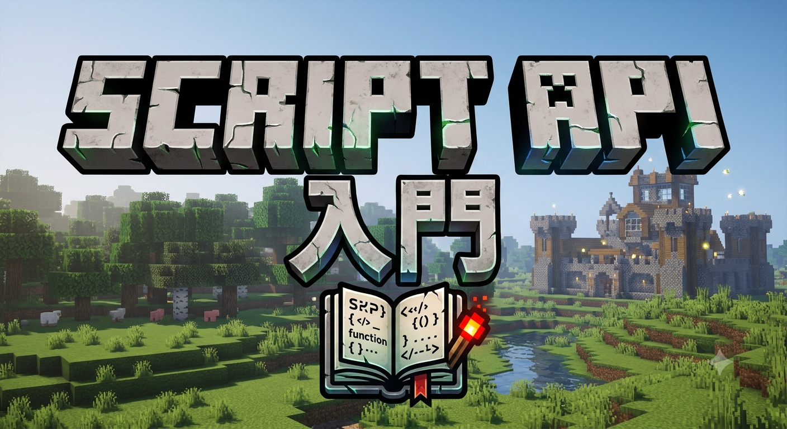
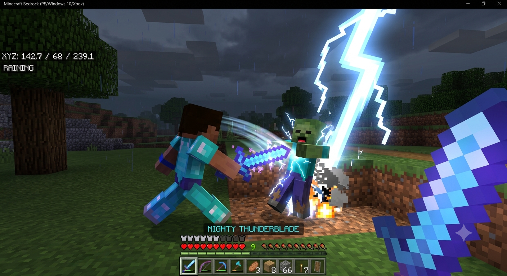

はじめに：Script APIとは何か
Script APIとは、マインクラフト統合版（Bedrock Edition）の世界を、JavaScript（正確にはTypeScriptベース）のプログラムから直接操作できる公式の仕組みです。ビヘイビアパックのJSONだけでは「アイテムを組み合わせる」ことしかできませんが、Script APIを使えば「敵を倒した瞬間に花火を打ち上げる」「特定の座標に入ったら音楽を流す」といった、条件分岐やタイミング制御を含む本格的なゲームロジックを、自分の手で書けるようになります。
これまでJSONのコンポーネントを組み合わせるだけだった人にとって、Script APIは「静的なパーツ組み立て」から「動的なプログラミング」への大きなジャンプになります。最初は難しく感じるかもしれませんが、仕組みそのものはとてもシンプルです。基本は「①何かが起きるのを待つ（イベント）」「②起きた瞬間に処理を書く（コールバック関数）」の2つだけ。この記事では、その2つの考え方を土台にしながら、実際にコピペしてすぐ動かせるコードと合わせて、初心者がつまずきやすいポイントまでまとめて解説していきます。
この記事で扱う範囲は、①開発環境とmanifestの設定、②イベントシステムの基礎、③実践的なサンプルコード、④文字表示（rawtext）の正しい書き方、⑤注意すべき落とし穴、⑥現役開発者ならではの裏技・豆知識、の6段階です。上から順番に読み進めれば、「イベントを待つ→処理を書く→ゲーム内で確認する」という一連の開発フローが自然に身につくように構成しています。
1. 開発環境の準備とmanifestの設定
Script APIを使うには、通常のアイテム制作とは違う準備が必要です。まず、Script APIのコードは.jsファイル（またはビルドした.js）としてビヘイビアパック内のscriptsフォルダに配置します。そして、そのファイルをマインクラフトに読み込ませるために、manifest.jsonに「モジュール」と「依存関係」の2つを追加で記述する必要があります。
{
"modules": [
{
"type": "script",
"language": "javascript",
"uuid": "（このモジュール専用の別のUUID）",
"version": [1, 0, 0],
"entry": "scripts/main.js"
}
],
"dependencies": [
{
"module_name": "@minecraft/server",
"version": "1.13.0"
}
]
}entryに指定したパス（例ではscripts/main.js）が、ゲーム起動時に最初に読み込まれるファイルになります。dependenciesのmodule_nameには@minecraft/serverという公式モジュールを指定するのが基本で、これによってworldやsystemといった、ゲームを操作するための重要なオブジェクトが使えるようになります。バージョン番号はマイクラのアップデートに合わせて変わることがあるので、エラーが出たときは真っ先にここを疑いましょう。
準備ができたら、マインクラフト側の設定も忘れずに行います。ワールド設定の「実験的機能（試験的機能）」から「ベータAPI（Beta APIs）」をオンにしないと、Script APIを使ったビヘイビアパックはそもそも有効化できません。この設定を見落として「アドオンが反映されない」と悩む人が非常に多いので、最初に必ずチェックしておきましょう。
2. Script APIの心臓部「イベント」を理解する
Script APIを学ぶうえで、最も重要な考え方が「イベント（Event）」です。マインクラフトの世界では「プレイヤーがブロックを壊した」「エンティティがダメージを受けた」「ワールドが起動した」など、無数の出来事が絶えず発生しています。Script APIは、これらの出来事のひとつひとつに「イベントリスナー」という関数を貼り付けておくことで、「その出来事が起きた瞬間に処理を実行する」というプログラムを組み立てます。
イベントは大きく分けてworld.beforeEventsとworld.afterEventsの2種類のグループに整理されています。名前の通り、beforeEventsは「その出来事が実際に反映される直前」に呼び出され、処理をキャンセルすることが可能です。一方afterEventsは「その出来事が実際に反映された直後」に呼び出され、結果を受け取って追加の演出やロジックを加えるのに向いています。
- worldInitialize： ワールドが読み込まれた瞬間に一度だけ発生するイベントです。カスタムアイテムのコンポーネントを登録するなど、ワールド起動時の初期設定を行うのに使います。
- playerSpawn： プレイヤーがワールドに参加・リスポーンした瞬間に発生します。初回参加時だけ挨拶メッセージを送る、といった演出に便利です。
- entityHitEntity： あるエンティティが別のエンティティを攻撃した瞬間に発生します。剣で殴った時の特殊効果などは、たいていこのイベントを起点に作られています。
- itemUse： プレイヤーがアイテムを使用（右クリック／タップ）した瞬間に発生します。杖やスクロールのようなアイテムの起点になる代表的なイベントです。
- blockPlace / playerBreakBlock： ブロックが設置された時、あるいはプレイヤーがブロックを壊した時に発生します。トラップやギミックの作成でよく使われます。
これらのイベントは、それぞれ「どのプレイヤー・エンティティ・ブロックで発生したか」という詳細情報（イベントデータ）を持っています。関数の引数として受け取れるこのデータを使うことで、「誰が」「どこで」「何をしたか」を判定し、狙った処理だけを実行できるようになります。
3. 実践！今すぐ動くサンプルコード
ここからは、実際にコピー＆ペーストして動かせるサンプルコードを紹介します。今回は「剣で敵を攻撃すると、攻撃した相手の足元に稲妻が落ちる」という、Script APIの入門として定番のギミックを作ってみましょう。

攻撃した瞬間にイベントが発火し、対象の座標へ雷エンティティをスポーンさせるシンプルな仕組みです。
import { world, system } from "@minecraft/server";
// エンティティが別のエンティティを攻撃した「直後」に発生するイベントを購読する
world.afterEvents.entityHitEntity.subscribe((eventData) => {
const attacker = eventData.damagingEntity;
const target = eventData.hitEntity;
// 攻撃者がプレイヤーであり、かつ手に持っているアイテムが
// 「diamond_sword」の場合だけ処理を実行する
if (attacker.typeId !== "minecraft:player") return;
const equippable = attacker.getComponent("equippable");
const heldItem = equippable?.getEquipment("Mainhand");
if (!heldItem || heldItem.typeId !== "minecraft:diamond_sword") return;
// 対象がいたワールド・座標を取得して、稲妻エンティティをスポーンさせる
const dimension = target.dimension;
const location = target.location;
system.run(() => {
dimension.spawnEntity("minecraft:lightning_bolt", location);
attacker.sendMessage("§b§l雷撃の剣§r §fが発動した！");
});
});このコードのポイントは、eventDataからdamagingEntity（攻撃した側）とhitEntity（攻撃された側）を取り出し、getComponent("equippable")で「今、手に何を持っているか」を確認している部分です。条件を満たさない場合はreturnで処理を即座に打ち切ることで、無関係な攻撃にまで雷が落ちてしまうのを防いでいます。system.run()で処理を包んでいるのは、イベントの内部から直接ワールドを変更するとエラーになるケースがあるためで、次の「注意点」セクションで詳しく解説します。
4. 文字・テキスト表示の正しい書き方（rawtext）
Script APIでプレイヤーにメッセージを送る場合、上記のサンプルのようにsendMessage()に文字列を直接渡す方法が最も手軽です。ただし、翻訳キーを使いたい場合や、プレイヤー名など「動的に変わる値」を文中に埋め込みたい場合は、rawtextという特別な形式を使うのが正攻法です。
player.sendMessage({
rawtext: [
{ text: "§e" },
{ translate: "item.diamond_sword.name" },
{ text: "§r で攻撃した！ 残り体力: " },
{ text: `${player.getComponent("health").currentValue}` }
]
});textは普通の文字列を、translateはマイクラの言語ファイルに登録された翻訳キーを、それぞれそのまま表示するためのパーツです。配列の中に複数のパーツを並べて書くことで、「固定の文章」と「翻訳される単語」と「変数の値」を1つのメッセージに自然につなげることができます。特に、アイテム名や称号のように多言語対応させたい文字列は、直接日本語で書かずにtranslateを使う癖をつけておくと、後から英語対応する際に大幅に手間が省けます。
また、マイクラのチャット・サブタイトル表示ではカラーコード（§記号＋英数字1文字）が使えます。§cで赤、§bで水色、§lで太字、§rでリセットといった具合に、色や装飾を文章の途中で自由に切り替えられます。装飾を戻し忘れると、以降のメッセージまで太字や色付きのままになってしまうので、装飾を使った後は必ず§rでリセットする習慣をつけましょう。
5. Script APIを書くときの重要な注意点
Script APIは非常に強力ですが、通常のJavaScriptとは違う「マインクラフト特有のルール」がいくつかあります。ここを知らずにコードを書くと、「エラーが出ないのに動かない」「たまにゲームが強制終了する」といったトラブルに直面しやすいので、必ず押さえておきましょう。
- 読み取り専用（Read-Only）モードの存在： 多くの
beforeEventsや、ティック処理の一部区間では、ワールドの状態を「読み取る」ことはできても「書き換える」ことができない期間があります。この期間にブロックを設置したりエンティティをスポーンさせたりしようとすると、エラーが発生します。対処法として、サンプルコードのようにsystem.run(() => { ... })で処理を包み、次のティックにずらして実行するのが定番のテクニックです。 - 無限ループ・重い処理への注意： イベントの中で毎ティック大量の計算をしてしまうと、サーバー全体のパフォーマンスが悪化し、ワールドがカクつく原因になります。特に
system.runInterval()で短い間隔の処理を組む場合は、本当にその頻度が必要か、間隔を伸ばせないかを常に意識しましょう。 - 非同期処理と実行タイミングのズレ： Script APIの一部の関数は「Promise」を返す非同期処理になっています。処理の完了を待たずに次の行を実行してしまうと、意図しない順序でコードが動くことがあるため、
awaitを使って順番を保証する必要がある場面を意識しておきましょう。
また、@minecraft/serverモジュールはバージョンごとに仕様が細かく変わることがあります。特にベータAPI（Beta APIs）扱いの機能は、マイクラ本体のアップデートで関数名やイベント名が変更されることも珍しくありません。エラーが出た際は、まず自分が指定しているdependenciesのバージョン番号と、実際に導入しているマイクラのバージョンが噛み合っているかを確認する癖をつけておくと、原因究明がぐっと早くなります。
【裏技・豆知識】現役開発者だけが知るテクニック集
ここでは、実際に開発を続ける中で見つけた、教科書にはあまり載っていない実践的なテクニックをまとめて紹介します。どれも今日から使えるものばかりなので、ぜひ自分のアドオンに取り入れてみてください。
- Dynamic Properties（動的プロパティ）で「セーブデータ」を持たせる： エンティティやワールドに
setDynamicProperty()で値を保存しておくと、ワールドを閉じても値が保持されます。「プレイヤーごとの所持ポイント」や「ボスの撃破フラグ」のような、コマンドのスコアボードだけでは表現しづらい複雑なデータの保存に最適です。 - system.runIntervalの「戻り値」を保存してキャンセルする：
system.runInterval()は実行IDを返します。これを変数に保存しておき、条件を満たしたタイミングでsystem.clearRun(id)を呼び出せば、無限に続くはずだった処理を任意のタイミングで止められます。「一定時間だけ効果を発動するアイテム」を作る時の定番テクニックです。 - スコアボードとScript APIを併用する： 既存のコマンド資産（スコアボードで作ったミニゲームなど）を活かしたい場合、
world.scoreboard経由でスコアの値をJavaScript側から読み書きできます。コマンドブロックの複雑な条件分岐を、Script APIのif文に置き換えるだけで、可読性もメンテナンス性も大きく向上します。 - afterEventsの中でtry-catchを使ってエラーを握りつぶさない： イベント処理内で例外が発生すると、その1回分の処理だけが止まり、以降のイベントには影響しないことが多いです。しかし気づかないままエラーを放置すると、機能が「なぜか一部だけ動かない」原因になります。開発中は
console.warn()やworld.sendMessage()でエラー内容を可視化する癖をつけると、デバッグが劇的に楽になります。 - system.beforeEvents.startupで初期化処理をまとめる： カスタムコンポーネントの登録など、ワールド起動より前に済ませておく必要がある処理は、
worldInitializeより早いタイミングで呼ばれるstartup系のイベントにまとめておくと、読み込み順序に起因する不具合を避けやすくなります。
よくある質問（FAQ）
A. 変数、if文、関数の基本が分かっていれば、この記事で紹介したレベルのコードは十分書けます。最初はサンプルコードを少しずつ書き換えながら、動きの違いを確認していくのがおすすめです。
A. まず「実験的機能（ベータAPI）」がオンになっているか、manifest.jsonの
entryのパスが実際のファイル名と一致しているかを確認してください。それでも解決しない場合は、Minecraft内のコンテンツログ（エラーログ）にJavaScriptの構文エラーが出ていないか確認しましょう。
A. 「その出来事自体を止めたい・キャンセルしたい」場合はbeforeEvents、「出来事が起きたあとに追加の演出や処理をしたい」場合はafterEventsを使うのが基本です。迷ったときは、まずafterEventsから試してみることをおすすめします。
参考資料・公式ドキュメント
本記事の内容は、実際の制作経験をもとにまとめていますが、Script APIの仕様は今後のアップデートで変更される可能性があります。より正確で最新の一次情報を確認したい場合は、以下の公式リソースも合わせてご参照ください。
- Minecraft Creator - Script APIドキュメント（Microsoft公式） — イベントやクラスの最新仕様が随時更新されている一次情報源です。
- Minecraft Creator Documentation（Microsoft公式） — アイテムコンポーネントを含む、アドオン開発全般の公式ドキュメントです。
サイト運営指針
当サイト「SORANNCRAFT」では、最新のアップデート情報を踏まえた「動く」解説を提供することを約束します。マイクラの仕様変更は激しいですが、常に現場でコードを書き続けている開発者としての誇りを持って、正確でワクワクする情報をお届けします。
プライバシーポリシー
広告の配信について
当サイトは、第三者配信の広告サービス「Googleアドセンス」を利用しています。広告配信事業者は、お客様の過去のアクセス情報に基づき、最適な広告を表示するためにCookie（クッキー）を使用することがあります。これにより、お客様の興味・関心に合わせた適切な広告提供が可能となります。なお、Cookieを通じて収集される情報には、お客様個人を特定する情報は含まれておりません。Cookieの使用を希望されない場合は、Googleの広告設定ページにてパーソナライズ広告を無効に設定することができます。
アクセス解析ツールについて
当サイトでは、サイト利用状況の把握およびサービス向上を目的として、Googleによるアクセス解析ツール「Googleアナリティクス」を導入しています。Googleアナリティクスはデータの収集のためにCookieを使用しますが、このデータは匿名で収集されており、個人を特定するものではありません。この機能はCookieを無効にすることで収集を拒否することが出来ますので、お使いのブラウザの設定をご確認ください。
免責事項
当サイトで提供する記事内容およびプログラムコード、アドオンファイル等については、可能な限り正確を期し、動作確認を行っておりますが、その正確性や安全性を保証するものではありません。当サイトの情報を用いて生じたトラブル、損害、データの破損等について、運営者は一切の責任を負いかねます。アドオンの導入や設定変更は、必ず各自の責任において、ワールドのバックアップを取った上で行ってください。
著作権・肖像権について
当サイト内に掲載されているすべての文章、画像、動画、およびプログラムコードの著作権は、特段の記載がない限り運営者に帰属します。これらの内容を無断で転載、複製、販売、二次配布することは固く禁じます。引用を行う場合は、著作権法に基づき適切な範囲で行ってください。また、当サイトは著作権や肖像権の侵害を目的としたものではありません。万が一、掲載内容に不都合がございましたら、お手数ですがお問い合わせフォームよりご連絡ください。迅速に対応させていただきます。
公式お問い合わせフォーム（Googleフォーム）
📩 お問い合わせフォームを開く